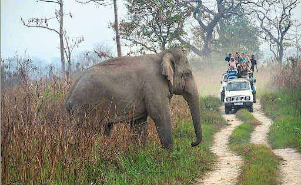

Manas National Park | ||
Deemed as a safe shelter for several rare and endangered species, Manas National Park in Assam is a UNESCO Natural World Heritage Site, a tiger and elephant reserve, and a biosphere reserve. Manas National Park gets its name from the River Manas, which flows through the reserve and is also the major tributary of Brahmaputra River. Sprawling in a large area of 950 sq km, the national park shares border with Bhutan's Royal Manas. National Park and is also home to species like Assam roofed turtle, hispid hare, golden langur and pygmy hog. The wildlife reserve covers Chirang, Darrang, Kokrajhar, Udalguri and Baska districts of Assam and has three ranges, namely Bansbari (Central), Panbari (Western), and Bhuiapara (Eastern) in it. Manas National Park is also applauded for its conservation park and is indeed a must-visit wildlife destination in India. |
 |
| History of Manas National ParkBefore 1928, Manas National Park was a reserve forest and called Manas R.F. and North Kamrup R.F. The park’s 360 sq. km area was designated as a wildlife sanctuary on 1st October, 1928. Between 1951 and 1955, the forest area was increased to 391 km² and Manas Biosphere Reserve was established in the year 1973. In 1985, the park was declared as the Natural World Heritage Site by UNESCO. Later in the year 1990, Kahitama R.F. and the Panbari R.F. were also included to create Manas National Park. But in 1992, UNESCO confirmed the park as 'World Heritage Site in Danger' because of poaching and terrorist activities. In 2008, the area of the national park was increased to 950 km². In 2011, Manas National Park was removed from UNESCO's list of 'World Heritage Site in Danger' due to its effective conservation efforts. |
|
| Flora in Manas National ParkThe combination of Sub-Himalayan Bhabar Terai and the Himalayan subtropical broadleaf forests makes Manas National Park one of the richest biodiversity in India. There are around 543 plant species recorded in the core of the national park. There are four types of vegetation in Manas National Park namely, Sub-Himalayan Light Alluvial Semi-Evergreen forests (northern parts); East Himalayan mixed Moist and Dry Deciduous forests; Low Alluvial Savanna Woodland, and Assam Valley Semi-Evergreen Alluvial Grasslands. |
Some common tree species in Manas National Park include :
|
|
|
||
| Fauna in Manas National ParkThe park has rich wildlife where a large number of animals and birds co-exist. As per the record, there are approx 450 species of birds, 50 species of reptiles, 55 species of mammals and few species of amphibians co-inhabiting in Manas National Park. The park is known for the rare species of animals like the Assam roofed turtle, hispid hare, golden langur and pygmy hog. It is also home to the largest population of the endangered Bengal florican in the world. |
Major Animal Species in Manas National Park :
|
|
|
||
There are a number of attractions in and around Manas National Park apart from its wildlife that make it an ideal destination to visit. Rivers, Guwahati Tea Auction Centre (GATC), and a monastery & shrine of the Vaishnavite reformer, Mahadeva are the major points of interest in and around Manas National Park. Other nearby tourist places from the park includes Doars and Guwahati.
The best time to visit Manas National Park is from October to April. Jeep safaris are the best way to enjoy a wildlife sighting tour in Manas National Park.
Jeep Safari : A perfect way to explore the park as one can witness tigers, leopards and other animals from a safe distance.
A perfect way to explore the park as one can witness tigers, leopards and other animals from a safe distance.
Safari Timings:
Morning : 9:00 AM to 12:00PM
Evening : 2:00PM to 5:00PM
By Air : The nearest airport to Manas National Park is in Guwahati. Regular flights are available from Bagdogra, New Delhi, Kolkata, Mumbai, Chennai, Bangalore, Hyderabad, Dibrugarh, Goa, Jorhat and other major cities in India to Guwahati. Cabs are easily available from the airport for Manas National Park.
By Rail : Barpeta Road is the nearest railhead (32 km from Manas). Guhwati is another railway station close to Manas National Park.
By Road : Manas National Park is 176 km away from Guwahati which takes about 5 hours to reach. Cabs are available from Guwahati to the national park.